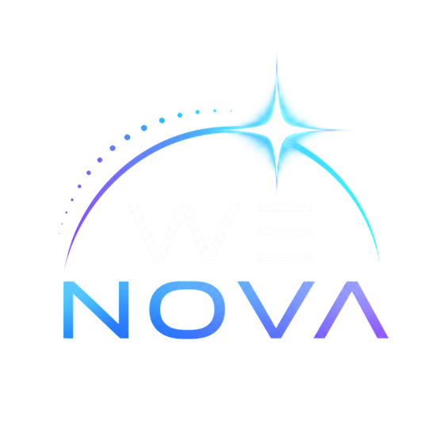

Oriana × Wenova · 2026.11.12
Mi változott 2026 augusztusa óta?
2026-11-09-i forrásállapot. Hogy a saját munkatérben mi érhető el, az fiókfüggő: ha a munkatérben elérhető, kipróbáljuk.
5 perc · Csaba
Újdonságok · heti bejegyzések
Hat hét, amely a mai napot érinti
2026. 08.17–08.21.Site közös szerkesztés
2026. 08.24–08.28.Több böngésző támogatása; eseményre induló feladatok
2026. 09.07–09.11.Gyors chat a Petből (Windows és macOS)
2026. 09.28–10.02.Space, Team Tasks, workspace connections, dots, Sites csatlakoztatott adattal
2026. 10.26–10.30.GPT-6.1 Terra a Work-ben: vizuális érvelés és computer use
2026. 11.02–11.06.dots: válasz iOS-értesítésből, megbízhatóbb Windows-működés
A dátum heti bejegyzést jelent, nem pontos megjelenési napot. Három összefüggést emelj ki: közös munka, Terra, Pet és dots.
Mit jelent ez ma
Három összefüggés a mai gyakorlatokhoz
Közös munka
Space, Team Tasks, Sites: a 3. és a 6. kiegészítő gyakorlat, ha a munkatérben elérhető
Maker
GPT-6.1 Terra: a 4. gyakorlat háttérmunkája
Pet és dots
állapotjelzés és folyamatos agent: fogalom, nem ígéret
A modellválasztóban látszik-e a Terra, azt a saját képernyőn nézzék meg.
Bejelentett, még nem mai állapot
Ami még csak ezután jön
Tervezett változások
- 2026-11-18: a dots alapértelmezett engedélyezése Enterprise-, Edu- és Healthcare-munkatereken; Business Standard-ra nem ígérjük
- 2026-12-11: a saját GPT-k tervezett kivezetése; a fiókod értesítése az irányadó
- 2026-12-31: a Sites ingyenes hosztolásának jelzett vége
Ezeket nem tanítjuk ma tényként; a saját munkatérben ellenőrizd.
Egy mondat mindegyikre; a 2027-es díjakat és kereteket nem becsüljük.